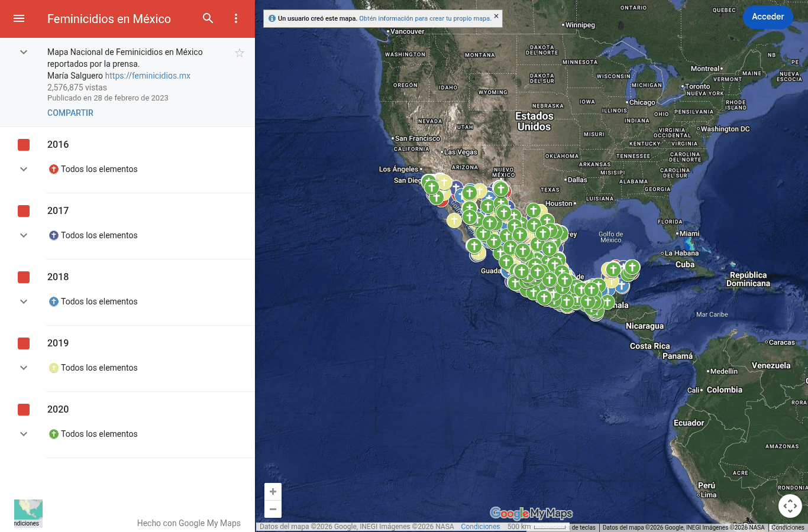
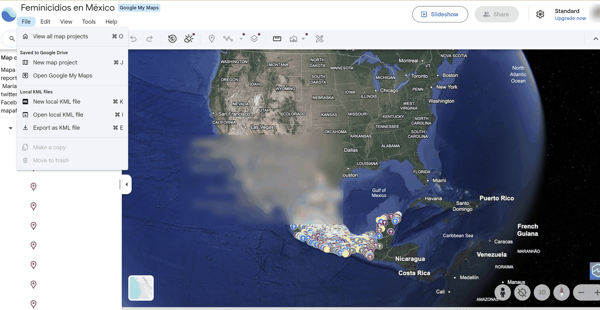
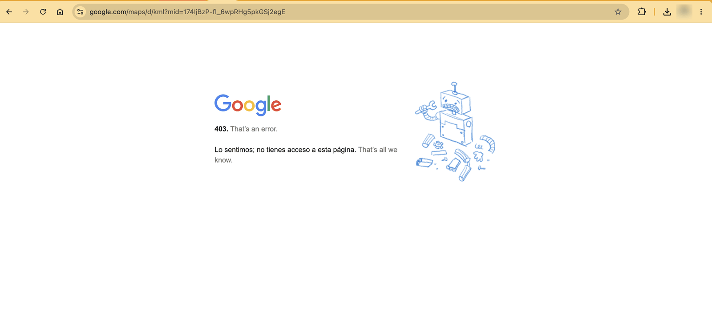

F10. Mapa de feminicidios de María Salguero
Mapa ciudadano de feminicidios reportados por la prensa. Se acepta como contraste del subregistro oficial del SESNSP (riesgo 2 de E0): permite comparar, por estado y año, los feminicidios reportados en prensa contra las carpetas de investigación oficiales.
| Campo | Descripción |
|---|---|
| Nombre y dueño | “Feminicidios en México”, Mapa Nacional de Feminicidios en México reportados por la prensa. Elaborado por la geofísica María Salguero, a partir de notas de prensa desde 2016 [4]. |
| URL | https://www.google.com/maps/d/viewer?mid=174IjBzP-fl_6wpRHg5pkGSj2egE |
| Acceso | Visualización en Google My Maps; la descarga está restringida. Se intentaron tres vías: el menú del mapa no ofrece descarga; en Google Earth, “Exportar como archivo KML” no descarga nada; y el enlace de exportación de My Maps responde 403 (acceso denegado). El sitio de la autora (feminicidios.mx) ya no responde. |
| Formato y tamaño | Mapa con un punto por caso. |
| Grano | Un feminicidio reportado en prensa (ubicación y descripción). |
| Cobertura | Capas anuales de 2016 a 2020; publicado el 18 de febrero de 2023. |
| Información de México | Casos en todo el país. |
| Licencia y restricciones | Sin licencia declarada. |
| Llaves de integración | Ubicación geográfica (habría que asignarla a entidad) y año. |
| Preguntas de E0 | P2. |
| Decisión | Aceptada con limitaciones: cumple los criterios C1 y C3. Cumple C2 solo de forma parcial, porque sus datos de 2016 a 2020 se cruzan con la ventana del proyecto únicamente de 2017 a 2020. Cumple C4 solo de forma parcial, porque los datos son públicos pero no tienen una licencia declarada; se usan con fines académicos y citando a la autora. |



No hay vista previa de datos porque el mapa no se puede descargar; por eso la fuente queda fuera del almacén.
Problemas anticipados para la integración
- El mapa no permite exportar los datos; habría que solicitarlos a la autora o usar los totales que ella publica. Mientras no haya un archivo, la fuente no entra al almacén: queda en el catálogo como referencia del subregistro (ver pivote).
- Solo cubre de 2016 a 2020.
- Los casos están ubicados como puntos en el mapa y no asignados a una entidad.
- Se basa en notas de prensa, con criterios distintos a los de los registros oficiales.